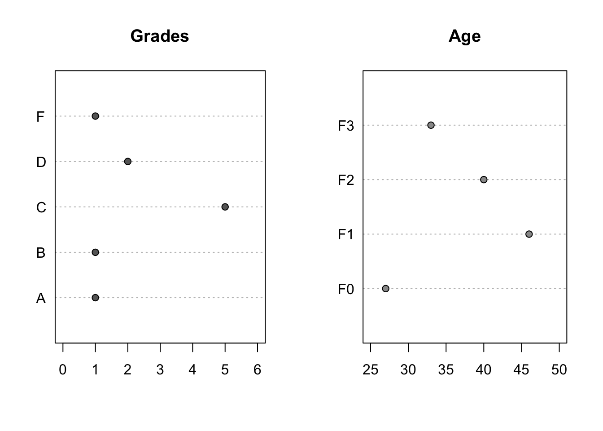
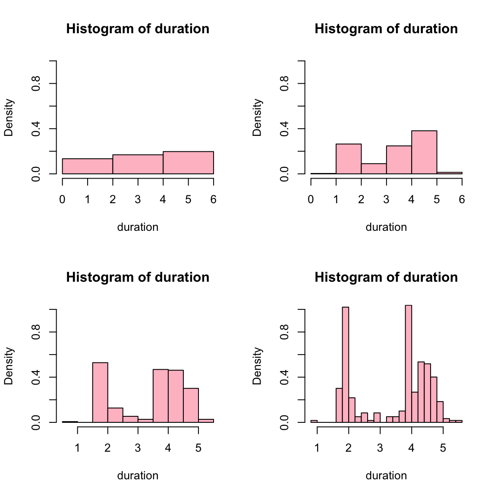
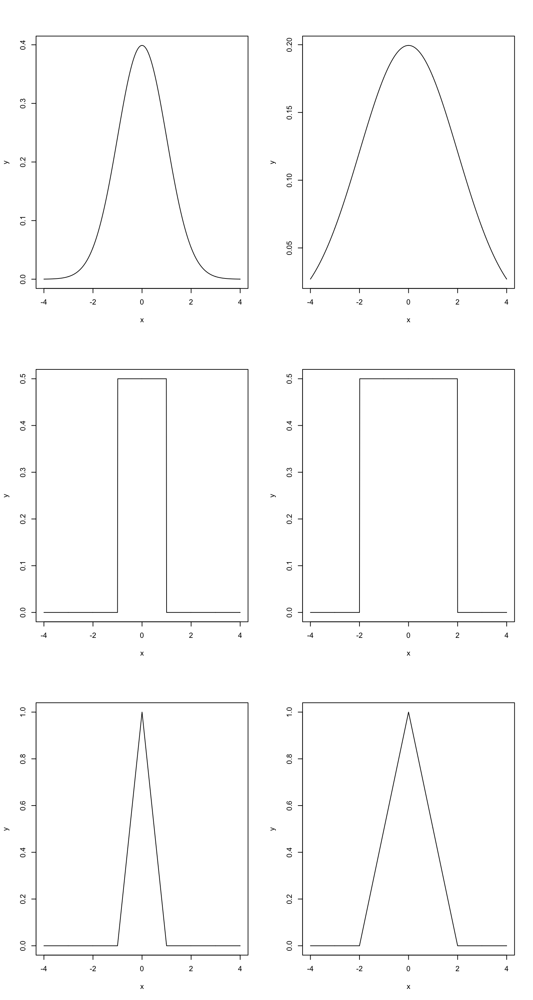
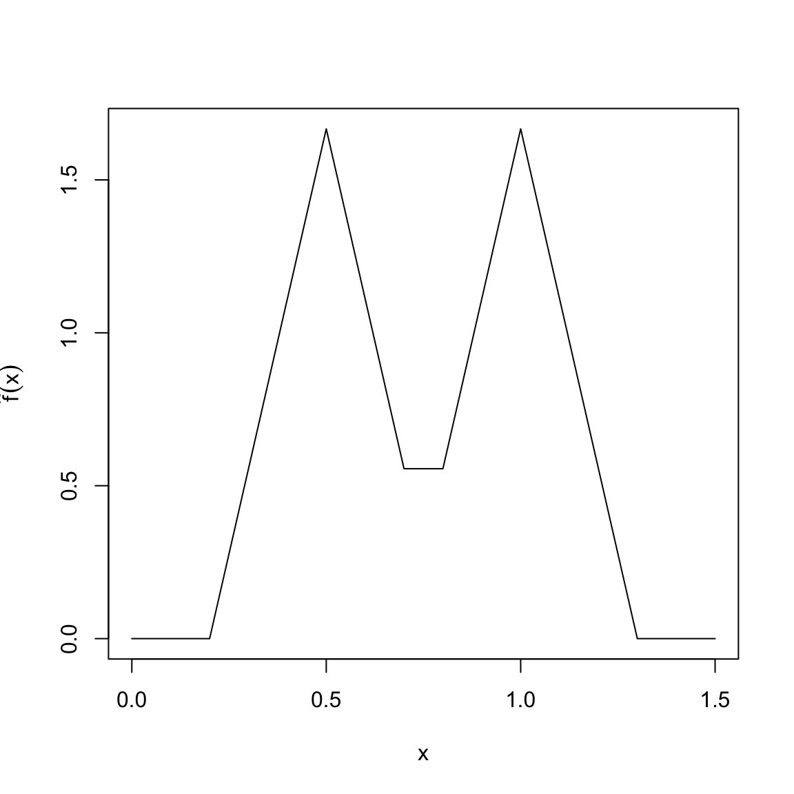
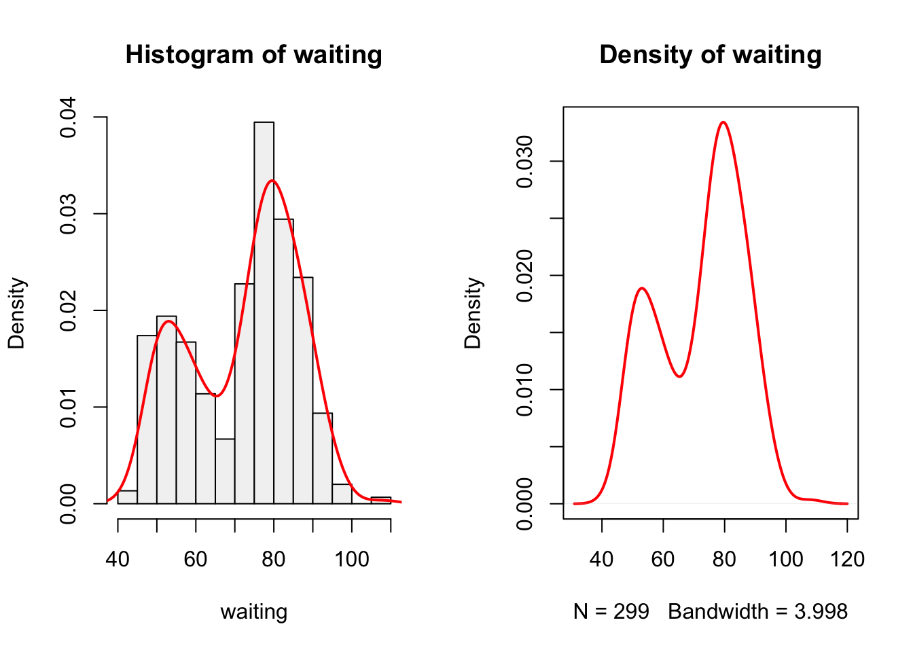

第 02 章、数据探索
侃侃迩行 · 2017-02-15
2.1. 什么是统计学
2.2. 数据
2.3. 定性数据
2.3.1. 频率分析表
- vector
Grades <- c("A", "D", "C", "D", "C", "C", "C", "C", "F", "B")
Grades
table(Grades)
xtabs(~ Grades)
table(Grades) / length(Grades) # Relative frequency table
prop.table(table(Grades))## [1] "A" "D" "C" "D" "C" "C" "C" "C" "F" "B"
## Grades
## A B C D F
## 1 1 5 2 1
## Grades
## A B C D F
## 1 1 5 2 1
## Grades
## A B C D F
## 0.1 0.1 0.5 0.2 0.1
## Grades
## A B C D F
## 0.1 0.1 0.5 0.2 0.1- data frame
library(MASS)
table(quine$Age)
with(data = quine, table(Age))
xtabs(~ Age, data = quine)##
## F0 F1 F2 F3
## 27 46 40 33
## Age
## F0 F1 F2 F3
## 27 46 40 33
## Age
## F0 F1 F2 F3
## 27 46 40 332.3.2. 盒状图
opar <- par(no.readonly = TRUE) # read in current parameters
par(mfrow=c(2, 2)) # change parameters
barplot(xtabs( ~ Grades),
col = "gray40",
xlab = "Grades",
ylab = "Frequency"
)
barplot(prop.table(xtabs(~ Grades)),
col = "gray40",
xlab = "Grades",
ylab = "Relative Frequency"
)
barplot(xtabs(~ Age, data = quine),
col = "gray90",
xlab = "Age",
ylab = "Frequency"
)
barplot(prop.table(xtabs(~ Age, data = quine)),
col = "gray90",
xlab = "Age",
ylab = "Relative Frequency"
)
par(opar) # reset to original parameters2.3.3. 点状图
- 图2.2
oldw <- getOption("warn")
options(warn = -1)
opar <- par(no.readonly = TRUE) # read in current parameters
par(mfrow = c(1, 2))
dotchart(xtabs( ~ Grades),
main = "Grades",
bg = "gray40",
xlim = c(0, 6)
)
dotchart(xtabs(~ Age, data = quine),
main = "Age",
bg = "gray60",
xlim = c(25, 50)
)
par(opar) # reset to original parameters
options(warn = oldw)- 图2.3
oldw <- getOption("warn")
options(warn = -1)
opar <- par(no.readonly = TRUE) # read in current parameters
par(mfrow = c(1, 2))
TDM <- xtabs(Days ~ Age, data = quine)
dotchart(TDM,
bg = "gray40",
xlab = "Total Days Missed",
xlim = c(400, 600)
)
ADM <- with (
data = quine,
tapply(Days, list(Age), mean)
)
dotchart(ADM,
xlab = "Avage Days Missed",
bg = "gray60",
xlim = c(10, 22)
)
par(opar) # reset to original parameters
options(warn = oldw)2.3.3. 饼状图
opar <- par(no.readonly = TRUE) # read in current parameters
par(mfrow = c(1, 2))
GS <- gray(c(0.1, 0.4, 0.7, 0.8, 0.95)) # different grays
pie(xtabs( ~ Grades, data = quine),
radius = 1,
col = GS
)
mtext(
"Grades",
side = 3,
cex = 1.25,
line = 1
)
pie(xtabs( ~ Age, data = quine),
radius = 1,
col = GS
)
mtext(
"Age",
side = 3,
cex = 1.25,
line = 1
)
par(opar) # reset to original parameters2.4. 定量数据
2.4.1 茎叶图
- 茎叶图适合展示小样本数据 (小于 100 个数据)。
NYYHR <- BABERUTH$hr[BABERUTH$team == "NY-A"]
stem(NYYHR)##
## The decimal point is 1 digit(s) to the right of the |
##
## 2 | 25
## 3 | 45
## 4 | 1166679
## 5 | 449
## 6 | 0rm(NYYHR)2.4.2 Strip Charts
stripchart()函数
args(stripchart)## function (x, ...)
## NULL- 数据
BABERUTH
head(BABERUTH)## year team g ab r h X2b X3b hr rbi sb bb ba slg
## 1 1914 Bos-A 5 10 1 2 1 0 0 0 0 0 0.200 0.300
## 2 1915 Bos-A 42 92 16 29 10 1 4 21 0 9 0.315 0.576
## 3 1916 Bos-A 67 136 18 37 5 3 3 16 0 10 0.272 0.419
## 4 1917 Bos-A 52 123 14 40 6 3 2 12 0 12 0.325 0.472
## 5 1918 Bos-A 95 317 50 95 26 11 11 66 6 58 0.300 0.555
## 6 1919 Bos-A 130 432 103 139 34 12 29 114 7 101 0.322 0.657NYYHR <- with(data = BABERUTH, hr[7 : 21])- 图 2.6
stripchart(
NYYHR,
xlab = "Home runs per season",
method = "stack",
main = "Strip chart of home runs while a New York Yankee",
pch = 1
)
rm (NYYHR)- 图 2.7
oldw <- getOption("warn")
options(warn = -1)
opar <- par(no.readonly = TRUE) # 读取现在的参数
par(mfrow = c(1, 2))
stripchart(
hr ~ team,
data = BABERUTH,
xlab = "Home runs per season",
method = "stack",
pch = 1
)
title ("Strip chart of home \n runs by team")
par(las = 1) # 纵坐标标签改为水平方向
stripchart(
hr ~ team,
data = BABERUTH,
pch = 19,
method = "stack",
col = c("gray30", "gray50", "gray70"),
xlab = "Home runs per season",
main = "Grayscale chart of \n home runs by team"
)
par(opar) # 还原原始参数设置2.4.3 密度曲线
2.4.3.1 直方图
hist()函数
args(hist.default)## function (x, breaks = "Sturges", freq = NULL, probability = !freq,
## include.lowest = TRUE, right = TRUE, density = NULL, angle = 45,
## col = NULL, border = NULL, main = paste("Histogram of", xname),
## xlim = range(breaks), ylim = NULL, xlab = xname, ylab, axes = TRUE,
## plot = TRUE, labels = FALSE, nclass = NULL, warn.unused = TRUE,
## ...)
## NULL- 图 2.8
oldw <- getOption("warn")
options(warn = -1)
opar <- par(no.readonly = TRUE) # 读入当下参数
par(mfrow = c(1, 2)) # 一行两列
bin <- seq(20, 70, 10) # 范围20-70，宽度为10的分块
hist(
BABERUTH $ hr [7: 21],
breaks = bin,
xlab = "Home Runs",
col = "pink",
main = "Bins of form (]"
)
hist(
BABERUTH $ hr [7 : 21],
breaks = bin,
right = FALSE,
xlab = "Home Runs",
col = "pink",
main = "Bins of form [)"
)
par(opar) # 重设为原始参数breaks = "Sturges"\[ h_{\text{Sturges}} = \frac{R}{1+\log^n_2} \] 此处的R为样本数据的全距。breaks = "FD"或"Freedman-Diaconis"\[ h_{\text{FD}} = \frac{2\times IQR}{n^{1/3}} \] 其中 IQR 为样本数据的四分位距。breaks = "Scott"\[ h_{\text{Scott}} = \frac{2 \cdot 3 ^{1/3} \cdot \pi ^{1/6} \cdot \hat{\sigma}}{n^{1/3}} \] 其中 \(\hat{\sigma}\) 为样本标准差。当然 R 实际使用的是简化版的公式：
\[ h_{\text{ScottR}} = \frac{3.5 \cdot \hat{\sigma}}{n^{1/3}} \]
R 并不直接使用上述公式计算出来的区间，而是用
pretty(h)函数对区间进行了进一步优化。Sturges
args(pretty.default)## function (x, n = 5, min.n = n%/%3, shrink.sml = 0.75, high.u.bias = 1.5,
## u5.bias = 0.5 + 1.5 * high.u.bias, eps.correct = 0, ...)
## NULLoldw <- getOption("warn")
options(warn = -1)
opar <- par(no.readonly = TRUE) # 读取现在的参数
xs <- BABERUTH $ hr[7 : 21]
R <- diff(range(xs))
n <- length(xs)
hs <- R / (1 + log2(n))
nclassS <- ceiling(R / hs)
bpS <- min(xs) + hs * 0 : nclassS
sturgesD <- hist(
x = xs,
breaks = bpS,
main = "Sturges Definition",
xlab = "",
col = "pink",
plot = FALSE
)
sturgesD $ breaks # 区间分界点
sturgesD $ counts # 每个区间数据个数
pretty(xs, n = nclassS) # 比较友好的分界点
sturgesA <- hist(
x = xs,
breaks = "Sturges",
main = "Sturges Adjusted",
xlab = "",
col = "blue",
plot = FALSE
)
sturgesA $ breaks
sturgesA $ counts
par(opar) # 重设为原始参数## [1] 22.00000 29.74421 37.48842 45.23264 52.97685 60.72106
## [1] 2 2 2 5 4
## [1] 20 30 40 50 60
## [1] 20 30 40 50 60
## [1] 2 2 7 4breaks = "FD"
n <- length(xs)
hfd <- 2 * IQR(xs) / (n^(1/3))
hfd
nclassFD <- ceiling(R / hfd)
nclassFD
bpFD <- min(xs) + hfd * 0 : nclassFD
bpFD
FDdef <- hist(
x = xs,
breaks = bpFD,
main = "FD Definition",
xlab = "",
col = "pink",
plot = "FALSE"
)
FDdef $ breaks
FDdef $ counts
pretty(xs, n = nclassFD)
FDadj <- hist(
x = xs,
breaks = "FD",
main = "FD Adjusted",
xlab = "",
col = "blue",
plot = "FALSE"
)
FDadj $ breaks
FDadj $ counts## [1] 10.94796
## [1] 4
## [1] 22.00000 32.94796 43.89593 54.84389 65.79185
## [1] 22.00000 32.94796 43.89593 54.84389 65.79185
## [1] 2 4 7 2
## [1] 20 30 40 50 60
## [1] 20 30 40 50 60
## [1] 2 2 7 4breaks = "Scott"
hsc <- 2 * 3 ^ (1 / 3) * pi ^ (1 / 6) * sd(xs) / n ^ (1 / 3)
hsc
nclassSC <- ceiling (R / hsc)
nclassSC
bpSC <- min(xs) + hsc * 0 : nclassSC
scottD <- hist(
x = xs,
breaks = bpSC,
main = "Scott Definition",
xlab = "",
col = "pink",
plot = FALSE
)
scottD $ breaks
scottD $ counts
pretty(xs, n = nclassSC)
scottA <- hist(
x = xs,
breaks = "Scott",
main = "Scott Adjusted",
xlab = "",
col = "blue",
plot = FALSE
)
scottA $ breaks
scottA $ counts## [1] 15.91972
## [1] 3
## [1] 22.00000 37.91972 53.83944 69.75916
## [1] 4 7 4
## [1] 20 30 40 50 60
## [1] 20 30 40 50 60
## [1] 2 2 7 4
2.4.3.2 概率密度
- 区间宽度对直方图的影响
oldw <- getOption("warn")
options(warn = -1)
opar <- par(no.readonly = TRUE) # 读取现在的参数
par (mfrow = c(2, 2))
attach(geyser)
ff <- function(br){
hist(
x = duration,
breaks = br,
freq = FALSE,
ylim = c(0, 1),
col = "pink"
)
}
ff(3)
ff(6)
ff(12)
ff(24)
detach(geyser)核概率密度估计是直方图的拓展 \[ \hat{f}(x) = \frac{1}{hn}\sum^n_{i=1}K(\frac{x-x_i}{h}) \] 其中
h平滑参数 (smoothing parameter) 或带宽 (bandwidth)。K(.)是核函数 (kernel function)。核函数通常为满足下面条件的对称性密度函数： \[ \int^!_{'' !}K(x)dx = 1 \] 常见的核函数有长方形、三角形和高斯核函数- 长方形 (rectangular) \[K(x)=\frac{1}{2}, |x|<1\]
三角形 (Triangular) \[K(x)= 1- |x|, |x|<1\]
高斯 (Gaussian) \[K(x)= \frac{1}{\sqrt{2\pi\sigma^2}}e ^{-\frac{(x-\mu)^2}{2\sigma^2}}, -\infty < x < \infty\] 其中\(\mu=0\)，\(\sigma\)为
h。
三种核密度函数与
h的关系
RctFun <- function(h, x){
(abs(x) < h) * 1/2
}
TrgFun <- function(h, x){
(abs(x) < h) * (1 - abs(x / h))
}
NrmFun <- function(h, x){
dnorm(x, sd = h)
}
ff <- function(h = 1, ker = NrmFun){
x <- seq(-4, 4, by = 0.01)
y <- ker (h, x)
plot(x, y, type = "l")
}
opar <- par(no.readonly = TRUE)
par (mfrow = c(3, 2))
ff(h = 1, ker = NrmFun)
ff(h = 2, ker = NrmFun)
ff(h = 1, ker = RctFun)
ff(h = 2, ker = RctFun)
ff(h = 1, ker = TrgFun)
ff(h = 2, ker = TrgFun)
- 当
xi值为 0.5 和 1 时三角核密度函数的值
xi <- c(0.5, 1.0)
n <- length(xi)
x <- seq(
from = min(xi) - 0.5,
to = max(xi) + 0.5,
by = 0.1
)
h <- 0.3
tri <- function(x){
(abs(x) < 1) * (1 - abs(x))
}
shapes <- sapply (
X = xi,
function(xi) {
(1 / (h * n)) * tri((x - xi) / h)
}
)
fx <- apply(shapes, 1, sum)
plot(x,
fx,
type = "l",
ylab = expression(hat(f)(x))
)
xi值 0.5 和 1 在不同位置上的权重
dimnames(shapes) <- list(x, (c(xi[1], xi[2])))
RES <- cbind(
shapes,
f = apply(shapes, 1, sum)
)
RES## 0.5 1 f
## 0 0.0000000 0.000000e+00 0.0000000
## 0.1 0.0000000 0.000000e+00 0.0000000
## 0.2 0.0000000 0.000000e+00 0.0000000
## 0.3 0.5555556 0.000000e+00 0.5555556
## 0.4 1.1111111 0.000000e+00 1.1111111
## 0.5 1.6666667 0.000000e+00 1.6666667
## 0.6 1.1111111 0.000000e+00 1.1111111
## 0.7 0.5555556 3.700743e-16 0.5555556
## 0.8 0.0000000 5.555556e-01 0.5555556
## 0.9 0.0000000 1.111111e+00 1.1111111
## 1 0.0000000 1.666667e+00 1.6666667
## 1.1 0.0000000 1.111111e+00 1.1111111
## 1.2 0.0000000 5.555556e-01 0.5555556
## 1.3 0.0000000 0.000000e+00 0.0000000
## 1.4 0.0000000 0.000000e+00 0.0000000
## 1.5 0.0000000 0.000000e+00 0.0000000- 同一个表格中画出每一个值的密度和最后的和密度
xi <- c(2.1, 2.2, 2.3, 2.4, 2.6, 2.7, 3.2, 3.3, 3.6, 3.7)
n <- length(xi)
x <- seq(
from = min(xi) - 1,
to = max(xi) + 1,
length.out = 800
)
h <- 0.3
gauss <- function(x){
1 / sqrt (2 * pi) * exp( - (x ^ 2) / 2)
}
shapes <- sapply(
X = xi,
FUN = function(xi){
(1 / (h * n)) * gauss((x - xi) / h)
}
)
plot(
x,
apply(shapes, 1, sum),
type = "l",
ylab = "",
lwd = 3
)
rug(xi, lwd = 2)
apply(
shapes,
2,
function(b){lines(x, b)}
)
## NULL- R语言中的
density()函数
args(density.default)## function (x, bw = "nrd0", adjust = 1, kernel = c("gaussian",
## "epanechnikov", "rectangular", "triangular", "biweight",
## "cosine", "optcosine"), weights = NULL, window = kernel,
## width, give.Rkern = FALSE, n = 512, from, to, cut = 3, na.rm = FALSE,
## ...)
## NULL- 用
density()函数做图
library(MASS)
opar <- par(no.readonly = TRUE)
par(mfrow = c(1, 2))
with(
data = geyser,
hist(waiting,
freq = FALSE,
col = "grey95"
)
)
with(
data = geyser,
lines(density(waiting),
col = "red",
lwd = 2
)
)
with(
data = geyser,
plot(
density(waiting),
col = "red",
lwd = 2,
main = "Density of waiting"
)
)
2.5 集中量数
2.5.1. 平均值
- 平均值函数
mean(x)
args(mean.default)## function (x, trim = 0, na.rm = FALSE, ...)
## NULL其中 na.rm = TRUE 说的是求平均值时先删除缺失值。trim = p 说的是求平均值前，先把数据从大到小排序，并删除两端的 \(\lfloor p\times n \rfloor\) 个数之后再求平均值
- 手工计算
NYYHR <- with(data = BABERUTH, hr[7 : 21])
n <- length(NYYHR)
NYYHR
SNYYHR <- sort(NYYHR)
SNYYHR
trm <- c(0.05, 0.10, 0.15, 0.50)
p.trm <- function(x) floor(x * n)
p.trm(trm)
trm.mean <- function(trm){
mean(SNYYHR[(1 + p.trm(trm)) : (n - p.trm(trm))])
}
sapply(trm, trm.mean)## [1] 54 59 35 41 46 25 47 60 54 46 49 46 41 34 22
## [1] 22 25 34 35 41 41 46 46 46 47 49 54 54 59 60
## [1] 0 1 2 7
## [1] 43.93333 44.38462 44.81818 46.00000- 利用
trim选项计算
sapply(trm, FUN = function(x) mean(NYYHR, trim = x))## [1] 43.93333 44.38462 44.81818 46.000002.5.2 中数
- 中数的计算
\[ m = \begin{cases} x_{k+1} & n = 2k + 1 & odd\\ \frac{1}{2}(x_{(k)}+x_{(k+1)}) & n = 2k & even\\ \end{cases} \]
- 中数和平均值的关系
Student1 <- c(73, 75, 74, 74)
Student2 <- c(95, 94, 12, 95)
Student3 <- c(66, 67, 63, 100)
SM <- rbind(Student1, Student2, Student3)
colnames(SM) <- c("Test1", "Test2", "Test3", "Test4")
means <- apply(SM, 1, mean)
medians <- apply(SM, 1, median)
TOC <- cbind(SM, means, medians)
TOC## Test1 Test2 Test3 Test4 means medians
## Student1 73 75 74 74 74 74.0
## Student2 95 94 12 95 74 94.5
## Student3 66 67 63 100 74 66.52.5.3 众数
- 众数指频率最高的那个值
Grades <- c("A", "D", "C", "D", "C", "C", "C", "C", "F", "B")
table(Grades)
names(which.max(table(Grades)))## Grades
## A B C D F
## 1 1 5 2 1
## [1] "C"- 通过概率密度曲线找众数
plot(density(VIT2005$totalprice),
main = ""
)
DV <- density(VIT2005$totalprice)
yval <- max(DV$y)
ID <- which(DV$y == yval)
MODE <- DV$x[ID]
MODE## [1] 256944.52.5.4 百分位点
- 一个分布的第
p个百分位点 (\(p^{th}\) quantile, \(0 \leq p \leq 1\) ) 指的是满足以下条件的 \(x_p\) 值 ：\(\mathbb{P}(x \leq x_p) \geq p\) 和 \(\mathbb{P}(X \geq x_p) \geq 1-p\)。